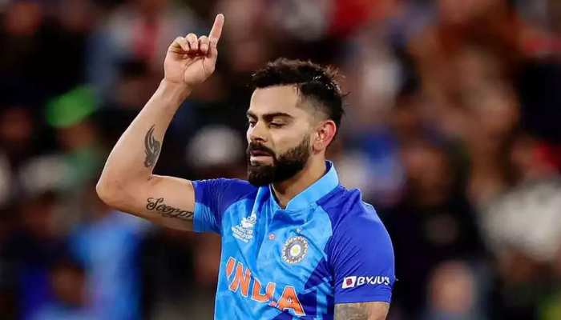

Virat Kohli

A photograph of virat kohli
Biography
Virat Kohli (born 5 November 1988) is an Indian international cricketer and former captain of the India national cricket teamHe is widely regarded as one of the greatest batsman of all time and the best of his time. Kohli plays as a right-handed batsman for Royal Challengers Bangalore in the Indian Premier League and for Delhi in Indian domestic cricket. With 40 wins out of 68 tests, Kohli is India's most successful test captain,and one of the most successful test captains of all time. He holds the record for being the highest run scorer in both IPL and in T20 internationals.He is also the highest run scorer in T20 WC history.He was chosen as the player of the decade by ICC in 2020.
Achivements
Test records
- Most Wins as captain of India, with 40 wins out of 68 matches
- Four Test double-hundreds in four consecutive series.
ODI records
-
Most ODI centuries while chasing (26)
-
Fastest to 8,000 runs(175 innings) 9,000 runs(194 innings) 10,000 runs(205 innings) 11,000 runs(222 innings) 12,000 runs(242 innings)
T20 records
-
Most runs in T20 internationals - 4,008 runs
-
Most Fifty plus scores in the career - 38 (including 37 fifties and 1 century
- Highest career batting average in T20I - 52.73.
- Fastest to - 3,000 runs(81 innings)[423] 3,500 runs(96 innings)
IPL records
-
Most runs in Indian Premiere League - 6,624 runs
-
Most runs in a single edition of IPL - 973 runs (2016)
- Only player to be involved in three double-century plus stands , two times with AB de Villiers and once with Chris Gayle.
- Fastest to - 5,000 runs(165 innings)[430] 6,000 runs (188 innings)
- Most runs against Delhi Capitals(925)
- Most hundreds in a season (4)
Best innings of virat kohli